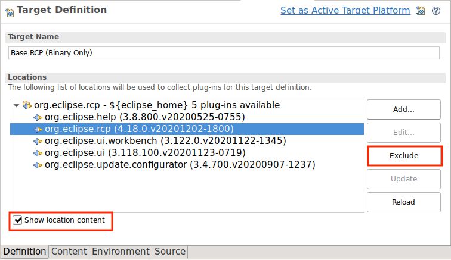
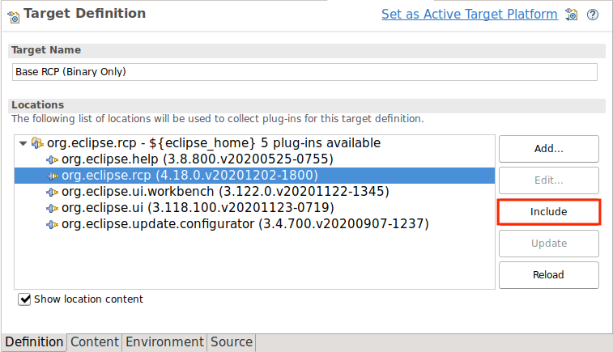
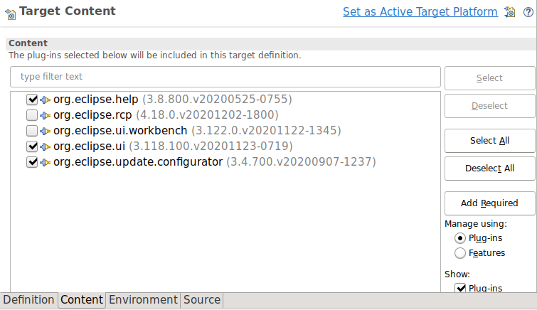
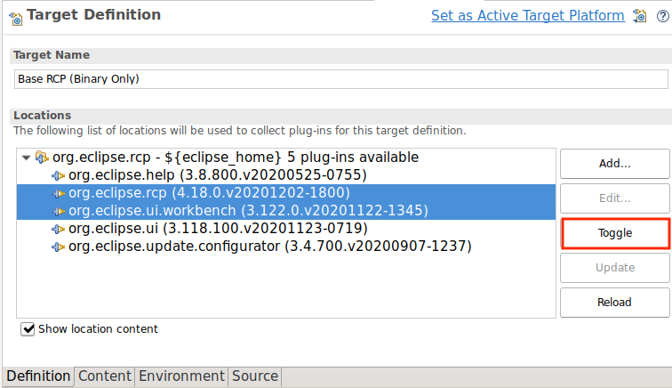
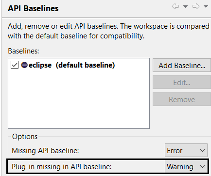
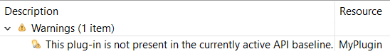
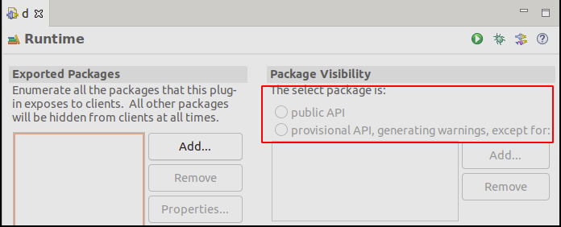

Here are descriptions of some of the more interesting or significant changes made to the Plug-in Development Environment (PDE) for the 4.19 release of Eclipse. They are grouped into:
Editors |
|
| Include/exclude bundles directly from the target definition view |
It is now possible to include and exclude a bundle directly from the Target Definition view. You should check the Show location content button, select a bundle and then the Remove button turns into an Exclude action.
 Of course, it's possible to include excluded items later. The changes are now directly reflected in the Content tab as well. If multiple items are selected and are of different state, the button turns into a Toggle one. This feature demonstrates the power of the recent API enhancements. |
API Tools |
|
| Warning for missing bundle in API baseline |
In Preferences > Plug-in Development > API Baselines, there is a new option to warn about missing bundle from the API baseline.
 The default severity for this option is warning. For the plug-ins that are not present in the currently active API baseline, API tools reports the warning as below: |
| Improved text for exported packages in the editor |
The text for Exported Packages was improved and the reference to the strict mode was removed, as Equinox does not support this mode since a while.  |
API Enhancements |
|
| New advanced editing capabilities for custom target platforms |
The API for adding custom Target-Platform-Locations was refactored and the existing implementation was cleaned up to support more advanced editing capabilities.
This was done by merging the functionality of the previous interfaces All methods for editing a target location now use a TreePath, so it's possible to also edit child items. Additionally, the new API offers the following new capabilities:
|